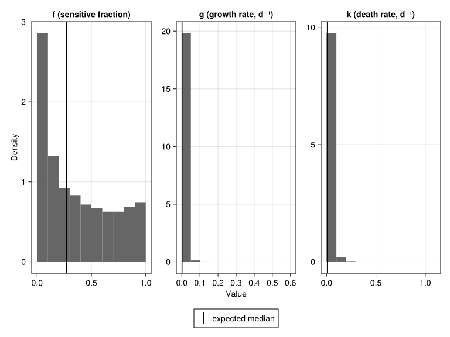

using Pumas
using Copulas # GaussianCopula, SklarDist
using AlgebraOfGraphics
using CairoMakie
using PairPlots # Corner plots / pair plots
using StatsBase
using SummaryTables # Nice table rendering
using Random
using Statistics
using LinearAlgebra
# Set seed for reproducibility
Random.seed!(42)
Virtual Population Generation using Gaussian Copulas
NoteTumor Burden Tutorial Series
This is Tutorial 2 of 6 in the Tumor Burden series.
| # | Tutorial | Status |
|---|---|---|
| 1 | Model Introduction | Complete |
| 2 | Copula Vpop Generation (current) | You are here |
| 3 | Global Sensitivity Analysis | |
| 4 | Structural Identifiability | |
| 5 | MILP Calibration | |
| 6 | VCT Simulation |
1 Learning Outcomes
Virtual populations are essential for conducting In Silico Clinical Trials (ISCTs). When parameters are estimated using Nonlinear Mixed Effects (NLME) models, they exhibit correlations that must be preserved when generating new virtual patients (Cortés-Ríos et al., 2025).
In this tutorial, you will learn:
- Why correlated parameter sampling matters in NLME modeling
- The theory behind Gaussian copulas and how they preserve correlations
- How to apply logit-normal transformations for bounded parameters
- A step-by-step implementation of the copula-based sampling algorithm
- How to validate that generated populations preserve target correlations
- Visualization techniques for virtual population characteristics
2 Prerequisites
This tutorial builds on the Tumor Burden Model introduced in Tutorial 1. We use the same parameter specifications:
- f (sensitive fraction): median 0.27, bounds [0, 1]
- g (growth rate): median 0.0013, bounds [0, 0.13] d⁻¹
- k (death rate): median 0.0091, bounds [0, 1.6] d⁻¹
- Correlation: r(f, g) = -0.64
3 Background
3.1 The Problem: Why Not Just Sample Independently?
Imagine you have fitted an NLME model and obtained estimates for three parameters: treatment-sensitive fraction (f), tumor growth rate (g), and death rate (k). Each parameter has a mean, variance, and importantly—correlations with other parameters.
A naive approach would be to sample each parameter independently from its marginal distribution. But this approach destroys the correlation structure that exists in the real patient population.
WarningThe Correlation Problem
Consider the tumor burden model from Qi & Cao (2022). The parameters f and g have a correlation of r = -0.64, meaning:
- Patients with high f (more treatment-sensitive cells) tend to have lower g (slower tumor growth)
- This biological relationship must be preserved in the virtual population
If we sample f and g independently:
- The correlation will be approximately 0 instead of -0.64
- The virtual population won’t match real clinical heterogeneity
- ISCT predictions will be biased
3.2 What is a Copula?
A copula is a mathematical function that joins univariate marginal distributions to form a multivariate distribution. The key theorem is Sklar’s theorem (Sklar, 1959):
Any multivariate joint distribution can be written as a function of its marginal distributions and a copula that describes the dependence structure.
This means we can:
- Separate the marginal distributions (how each parameter is distributed individually)
- Capture the dependence structure in a copula
- Combine them to generate correlated samples
3.3 Why Gaussian Copulas?
The Gaussian copula uses the multivariate normal distribution to capture correlations (Nelsen, 2006). It has several advantages:
| Feature | Benefit |
|---|---|
| Easy to specify | Just need correlation matrix |
| Spearman correlation preserved | Rank correlations survive monotonic transformations |
| Works with any marginals | Can use normal, lognormal, logit-normal, etc. |
| Well-understood | Extensive statistical literature |
TipKey Insight: Spearman Correlations
The Gaussian copula preserves Spearman (rank) correlations through any monotonic transformation. This is crucial because sampling with a copula consists of
- Sampling uniformly distributed values in the unit hypercube from the copula with the specified correlation structure
- Transforming sampled values to the target marginal distributions (e.g., logit-normal) by applying the respective quantile functions
Pearson correlations are NOT preserved through nonlinear transforms, but Spearman correlations are.
3.4 The Logit-Normal Distribution
Many pharmacometric parameters are bounded:
- Bioavailability F: [0, 1]
- Fraction sensitive f: [0, 1]
- Rates with physiological upper limits
The logit-normal distribution handles bounded parameters by working on the logit (log-odds) scale:
\[\text{logit}(p) = \log\left(\frac{p}{1-p}\right)\]
If \(Y \sim \text{Normal}(\mu, \sigma)\), then \(P = \text{logistic}(Y) = \frac{1}{1 + e^{-Y}}\) follows a logit-normal distribution bounded on [0, 1].
For general bounds [a, b]: \[P = a + (b - a) \cdot \text{logistic}(Y)\]
4 Libraries
Load the necessary packages for this tutorial.
What each package does:
Copulas: Implements various copula families including Gaussian copulasStatsBase: Spearman correlation computationAlgebraOfGraphics+CairoMakie: Publication-quality visualizationsPairPlots: Corner plots showing pairwise relationships and marginal distributionsSummaryTables: Clean rendering of DataFrames in documents
5 Part 1: Parameter Specifications
We use the tumor burden model parameters from Tutorial 1 and Qi & Cao (2022).
5.1 Model Recap
From Tutorial 1, the tumor burden model describes:
\[N(t) = N_0 f \exp{(-k t)} + N_0 (1-f) \exp{(g t)}\]
The full non-linear mixed effect model is:
tumor_burden_model = @model begin
@metadata begin
desc = "Tumor Burden Model for NSCLC Chemotherapy"
timeu = u"d" # Time unit is days
end
@param begin
# Typical values (population parameters)
tvf ∈ RealDomain(lower=0.0, upper=1.0)
tvg ∈ RealDomain(lower=0.0)
tvk ∈ RealDomain(lower=0.0)
# Inter-individual variability (diagonal covariance matrix)
# Values on the transformed scale (logit for f, log for g and k)
Ω ∈ PDiagDomain(3)
# Residual error (standard deviation)
σ ∈ RealDomain(lower=0.0)
end
@random begin
# Random effects vector (one per parameter)
η ~ MvNormal(Ω)
end
@covariates treatment
@pre begin
# Transform random effects to individual parameters
# f: logit-normal transformation (bounded 0-1)
f = logistic(logit(tvf) + η[1])
# g, k: log-normal transformation (positive values)
g = tvg * exp(η[2])
k = tvk * exp(η[3])
# Treatment effect on death rate
# treatment = 0 → control arm (no killing)
# treatment = 1 → treatment arm (killing at rate k)
k_eff = treatment * k
end
# Initial conditions (normalized tumor = 1)
@init begin
N_sens = f # Sensitive cells
N_res = 1 - f # Resistant cells
end
@dynamics begin
# Sensitive cells: die at effective rate (0 if control, k if treatment)
N_sens' = -k_eff * N_sens
# Resistant cells: always grow at rate g
N_res' = g * N_res
end
@derived begin
# Total normalized tumor size
Nt := @. N_sens + N_res
# Observation with residual error
tumor_size ~ @. Normal(Nt, σ)
end
endPumasModel
Parameters: tvf, tvg, tvk, Ω, σ
Random effects: η
Covariates: treatment
Dynamical system variables: N_sens, N_res
Dynamical system type: Matrix exponential
Derived: tumor_size
Observed: tumor_sizeFor details on the model biology and parameters, see Tutorial 1: Model Introduction.
5.2 Parameter Values from Literature
The parameter values come from Qi & Cao (2022), who fit this model to NSCLC clinical trial data:
# Population (typical) parameter values
pop_f = 0.27 # 27% of tumor is treatment-sensitive
pop_g = 0.0013 # Resistant cells grow ~0.13% per day
pop_k = 0.0091 # Sensitive cells die ~0.91% per day
# Inter-individual variability (standard deviations on transformed scale)
ω_f = 2.16 # High variability in sensitive fraction
ω_g = 1.57 # Moderate variability in growth rate
ω_k = 1.24 # Moderate variability in death rate
# Residual error (standard deviation)
resid_σ = 0.095
# Critical correlation from the data
cor_f_g = -0.64 # Negative correlation: high f ↔ low g-0.646 Part 2: Why Independent Sampling Fails
Let us demonstrate why independent sampling breaks the correlation structure.
patients = [Subject(; id, time=[0.0], covariates=(; treatment=false)) for id in 1:10_000]
param = (; tvf=pop_f, tvg=pop_g, tvk=pop_k, Ω=Diagonal([ω_f^2, ω_g^2, ω_k^2]), σ=resid_σ)
sims = simobs(tumor_burden_model, patients, param; simulate_error=false)Simulated population (Vector{<:Subject})
Simulated subjects: 10000
Simulated variables: tumor_sizevpop_indep = postprocess(sims) do generated, _
(; f=only(unique(generated.f)), g=only(unique(generated.g)), k=only(unique(generated.k)))
end |> DataFrame10000×3 DataFrame
9975 rows omitted
| Row | f | g | k |
|---|---|---|---|
| Float64 | Float64 | Float64 | |
| 1 | 0.0158452 | 0.000290043 | 0.0209089 |
| 2 | 0.61021 | 0.000417315 | 0.0373902 |
| 3 | 0.10233 | 0.00338172 | 0.0187781 |
| 4 | 0.172273 | 0.000246416 | 0.0322416 |
| 5 | 0.545329 | 0.0137507 | 0.0047135 |
| 6 | 0.896083 | 6.13901e-5 | 0.00252744 |
| 7 | 0.663406 | 3.60534e-5 | 0.0132779 |
| 8 | 0.187379 | 0.00377185 | 0.0107817 |
| 9 | 0.0246817 | 0.000544907 | 0.0606403 |
| 10 | 0.0701531 | 0.000171064 | 0.0197779 |
| 11 | 0.27582 | 0.00695131 | 0.0360686 |
| 12 | 0.775858 | 0.00106968 | 0.0924546 |
| 13 | 0.557495 | 0.00219867 | 0.0112001 |
| ⋮ | ⋮ | ⋮ | ⋮ |
| 9989 | 0.0163864 | 0.00340532 | 0.00406163 |
| 9990 | 0.835627 | 0.00483786 | 0.00478547 |
| 9991 | 0.0408368 | 0.00110114 | 0.0128352 |
| 9992 | 0.176477 | 0.000242741 | 0.0379893 |
| 9993 | 0.0379949 | 0.000587494 | 0.00562542 |
| 9994 | 0.840044 | 0.00422994 | 0.00370915 |
| 9995 | 0.134982 | 0.000307066 | 0.00176638 |
| 9996 | 0.400072 | 0.00077999 | 0.00173595 |
| 9997 | 0.0371127 | 0.000171852 | 0.0361415 |
| 9998 | 0.24262 | 0.000279511 | 0.00181319 |
| 9999 | 0.30535 | 0.000618075 | 0.00261995 |
| 10000 | 0.0793947 | 3.32767e-5 | 0.00733614 |
The correlation of the samples of f and g is
cor(vpop_indep.f, vpop_indep.g)-0.004113176838778906corspearman(vpop_indep.f, vpop_indep.g)-0.006267630122676301but the expected correlation was -0.64!
WarningResult: Correlation Lost!
The independently sampled population has essentially zero correlation between f and g, when the true correlation should be -0.64. This would lead to a virtual population that doesn’t represent real patient heterogeneity.
7 Part 3: The Gaussian Copula Algorithm
The copula-based sampling algorithm is illustrated in Figure 1.

In Pumas this algorithm corresponds to the following steps:
flowchart TB
A["Step 1: Define Model Parameters"] --> B["Step 2: Define Correlation Matrix<br/>(Spearman correlations)"]
B --> C["Step 3: Create Gaussian Copula<br/>with correlation matrix"]
C --> D["Step 4: Create Joint Distribution of Random Effects<br/>from marginals and copula"]
C --> D["Step 5: Sample Correlated Random Effects<br/>η ~ Sklar"]
D --> E["Step 6: Perform Model Simulation<br/>with sampled random effects"]
style A fill:#e1f5fe,stroke:#01579b
style D fill:#fff3e0,stroke:#e65100
style F fill:#e8f5e9,stroke:#2e7d32
7.1 Step 1: Define Model Parameters
Already done above.
7.2 Step 2: Define the Correlation Matrix
Spearman correlation matrix from NLME estimation:
# r(f,g) = -0.64, r(f,k) = 0, r(g,k) = 0
Rho = [
1.0 -0.64 0.0
-0.64 1.0 0.0
0.0 0.0 1.0
]3×3 Matrix{Float64}:
1.0 -0.64 0.0
-0.64 1.0 0.0
0.0 0.0 1.07.3 Step 3: Create the Gaussian Copula
Create Gaussian copula with the specified correlation structure:
copula = GaussianCopula(Rho)Copulas.GaussianCopula{3, Matrix{Float64}}(Σ = [1.0 -0.64 0.0; -0.64 1.0 0.0; 0.0 0.0 1.0]))7.4 Step 4: Create the Joint Distribution
correlated_randeffs_dist = SklarDist(copula, (Normal(0, ω_f), Normal(0, ω_g), Normal(0, ω_k)))Copulas.SklarDist{Copulas.GaussianCopula{3, Matrix{Float64}}, Tuple{Distributions.Normal{Float64}, Distributions.Normal{Float64}, Distributions.Normal{Float64}}}(
C: Copulas.GaussianCopula{3, Matrix{Float64}}(Σ = [1.0 -0.64 0.0; -0.64 1.0 0.0; 0.0 0.0 1.0]))
m: (Distributions.Normal{Float64}(μ=0.0, σ=2.16), Distributions.Normal{Float64}(μ=0.0, σ=1.57), Distributions.Normal{Float64}(μ=0.0, σ=1.24))
)7.6 Step 6: Perform Model Simulation
We now have correlated random effects that we can use for performing model simulations.
vrandeffs = [(; η) for η in eachcol(correlated_randeffs)]
sims = simobs(tumor_burden_model, patients, param, vrandeffs; simulate_error=false)Simulated population (Vector{<:Subject})
Simulated subjects: 10000
Simulated variables: tumor_sizeWe create a DataFrame of the simulated parameters f, g and k of the dynamical system:
vpop = postprocess(sims) do generated, _
(; f=only(unique(generated.f)), g=only(unique(generated.g)), k=only(unique(generated.k)))
end |> DataFrame
overview_table(vpop)| No | Variable | Stats / Values | Freqs (% of Valid) | Graph | Valid | Missing |
| 1 | f [Float64] |
Mean (sd): 0.368 (0.312) min ≤ med ≤ max: 3.8e-5 ≤ 0.288 ≤ 0.999 IQR (CV): 0.552 (0.846) |
10000 distinct values | 10000 (100%) |
0 (0%) |
|
| 2 | g [Float64] |
Mean (sd): 0.00438 (0.0139) min ≤ med ≤ max: 3.88e-6 ≤ 0.00128 ≤ 0.551 IQR (CV): 0.00335 (3.17) |
10000 distinct values | 10000 (100%) |
0 (0%) |
|
| 3 | k [Float64] |
Mean (sd): 0.0189 (0.0351) min ≤ med ≤ max: 5.96e-5 ≤ 0.00893 ≤ 1 IQR (CV): 0.0167 (1.86) |
10000 distinct values | 10000 (100%) |
0 (0%) |
|
| Dimensions: 10000 x 3 Duplicate rows: 0 | ||||||
NoteWhy Does This Preserve Correlations?
The quantile function is monotonically increasing: if \(U_1 < U_2\), then \(\text{quantile}(U_1) < \text{quantile}(U_2)\).
Spearman correlation measures the correlation of ranks. Since the quantile transform preserves the ordering of values, it preserves the ranks, and therefore preserves the Spearman correlation.
This is why we specified Spearman correlations in our correlation matrix—they survive monotonic transformations like the quantile function and the logistic function in Step 6.
8 Part 4: Validation
8.1 Check Spearman Correlations
The most critical validation is checking that our target correlations are preserved.
Compute observed Spearman correlations:
param_matrix = Matrix(vpop[:, [:f, :g, :k]])
observed_corr = corspearman(param_matrix)3×3 Matrix{Float64}:
1.0 -0.621919 0.0108949
-0.621919 1.0 0.00207793
0.0108949 0.00207793 1.0The absolute difference from the target correlation matrix is:
@. abs(observed_corr - Rho)3×3 Matrix{Float64}:
0.0 0.0180807 0.0108949
0.0180807 0.0 0.00207793
0.0108949 0.00207793 0.0
TipValidation Passed!
The observed correlations closely match the expected correlations. The small differences are due to sampling variability and decrease with larger sample sizes.
8.2 Check Marginal Distributions
Let’s verify that f, g and k follow their expected distributions by comparing the expected and observed median and omega (standard deviation of untransformed sample):
DataFrame(
parameter=[:f, :g, :k],
expected_median=[pop_f, pop_g, pop_k],
observed_median=[median(vpop.f), median(vpop.g), median(vpop.k)],
expected_omega=[ω_f, ω_g, ω_k],
observed_omega=[std(logit.(vpop.f)), std(log.(vpop.g)), std(log.(vpop.k))],
) |> simple_table| parameter | expected_median | observed_median | expected_omega | observed_omega |
| :f | 0.27 | 0.288 | 2.16 | 2.19 |
| :g | 0.0013 | 0.00128 | 1.57 | 1.58 |
| :k | 0.0091 | 0.00893 | 1.24 | 1.24 |
9 Part 5: Visualization
9.1 Parameter Distributions
specs_vpop = data(vpop) * mapping([:f, :g, :k] .=> ["f (sensitive fraction)", "g (growth rate, d⁻¹)", "k (death rate, d⁻¹)"], col=dims(1)) * histogram(; normalization=:pdf, datalimits=extrema)
specs_median = data((; f=[pop_f], g=[pop_g], k=[pop_k])) * mapping([:f, :g, :k], col=dims(1), linestyle=AlgebraOfGraphics.direct("expected median")) * visual(VLines)
draw(specs_vpop + specs_median; axis=(; xlabel="Value", ylabel="Density"), facet=(; linkxaxes=false, linkyaxes=false), legend=(; position=:bottom))
9.2 Correlation Structure: Independent vs Copula Sampling
# Combine both methods into one DataFrame
vpop_total = vcat(vpop_indep, vpop; source="method" => ["Independent (r ≈ 0)", "Copula (r = -0.64)"])
# Create scatter plot with faceting by method
plt_scatter = data(vpop_total) *
mapping(
:f => "f (sensitive fraction)",
:g => "g (growth rate, d⁻¹)",
layout=:method
) *
visual(Scatter; marker='○')
draw(
plt_scatter;
)
NoteVisual Comparison
The difference is striking:
- Independent Sampling: Points show no apparent relationship between f and g
- Copula-Based Sampling: Points show a clear negative relationship—high f values tend to pair with low g values
This negative correlation is biologically meaningful: tumors with more treatment-sensitive cells tend to grow more slowly.
9.3 Corner Plot: All Pairwise Relationships
pairplot(
vpop => (
PairPlots.Scatter(),
PairPlots.MarginHist(),
PairPlots.Calculation(corspearman),
),
labels=Dict(
:f => "f (sensitive fraction)",
:g => "g (growth rate)",
:k => "k (death rate)",
)
)
10 Part 6: Optional - Save Results
The generated virtual population will be used in subsequent tutorials. You can optionally save it to a CSV file.
# Optional: Save results for use in separate session
# Uncomment the following lines to save:
# using CSV
# CSV.write(joinpath(@__DIR__, "outputs", "vpop_tumor_burden.csv"), vpop)
# To load in next tutorial:
# vpop = CSV.read(joinpath(@__DIR__, "outputs", "vpop_tumor_burden.csv"), DataFrame)11 Practical Recommendations
Tip1. Always Use Spearman Correlations
When specifying the correlation matrix for a Gaussian copula:
- Use Spearman (rank) correlations from your NLME output
- Pearson correlations can be distorted by nonlinear transformations
- Most NLME software reports correlation matrices on the eta (random effect) scale
Tip2. Choose Appropriate Distributions
| Parameter Type | Bounds | Possible Distribution |
|---|---|---|
| Fractions (F, bioavailability) | [0, 1] | Logit-normal |
| Positive rates (CL, V) | [0, ∞) | Log-normal |
| Bounded positive (with physiological max) | [0, max] | Logit-normal |
| Unbounded | (-∞, ∞) | Normal |
Tip3. Sample Size Considerations
- For ISCTs: 1,000-10,000 virtual patients typically sufficient
- Larger samples give more stable correlation estimates
Warning4. Validate Before Using
Always validate your virtual population before running ISCTs:
- Check correlations match expected values
- Check marginal distributions match expected values
- Visualize parameter distributions and correlations
12 Summary
12.1 Key Takeaways
Independent sampling destroys correlations in the virtual population, leading to biased ISCT predictions
Gaussian copulas preserve rank (Spearman) correlations through any monotonic transformation
The algorithm in Pumas:
- Define parameter specifications
- Define Spearman correlation matrix
- Create Gaussian copula
- Create joint distribution from marginals of random effects and copula
- Sample random effects from joint distribution
- Perform simulations using the sampled random effects
- Validate results
Always validate correlations and marginals before using the virtual population
12.2 Quick Reference: Key Functions
| Function | Package | Purpose |
|---|---|---|
corspearman(X) |
StatsBase.jl | Compute Spearman correlations |
GaussianCopula(Rho) |
Copulas.jl | Create copula with correlation matrix |
SklarDist(copula, marginals) |
Copulas.jl | Create joint distribution from marginals and copula |
12.3 What’s Next
In Tutorial 3: Global Sensitivity Analysis, we will:
- Analyze which parameters most influence treatment outcomes
- Learn about Sobol and eFAST sensitivity methods
- Discover that
fdominates but the importance ofgandkvaries across timepoints - Use the generated virtual population here for GSA parameter ranges
12.4 References
Cortés-Ríos, J., Magee, M., Sher, A., Jusko, W. J., & Desikan, R. (2025). A step-by-step workflow for performing in silico clinical trials with nonlinear mixed effects models. CPT: Pharmacometrics & Systems Pharmacology. https://doi.org/10.1002/psp4.70122
Nelsen, R. B. (2006). An introduction to copulas (2nd ed.). Springer. https://doi.org/10.1007/0-387-28678-0
Qi, T., & Cao, Y. (2022). Virtual clinical trials: A tool for predicting patients who may benefit from treatment beyond progression with pembrolizumab in non-small cell lung cancer. CPT: Pharmacometrics & Systems Pharmacology, 12(2), 236–249. https://doi.org/10.1002/psp4.12896
Sklar, A. (1959). Fonctions de répartition à n dimensions et leurs marges. Publications de l’Institut de Statistique de l’Université de Paris, 8, 229–231.